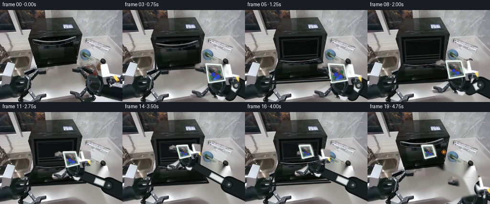
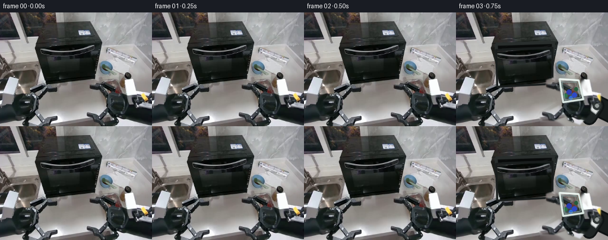
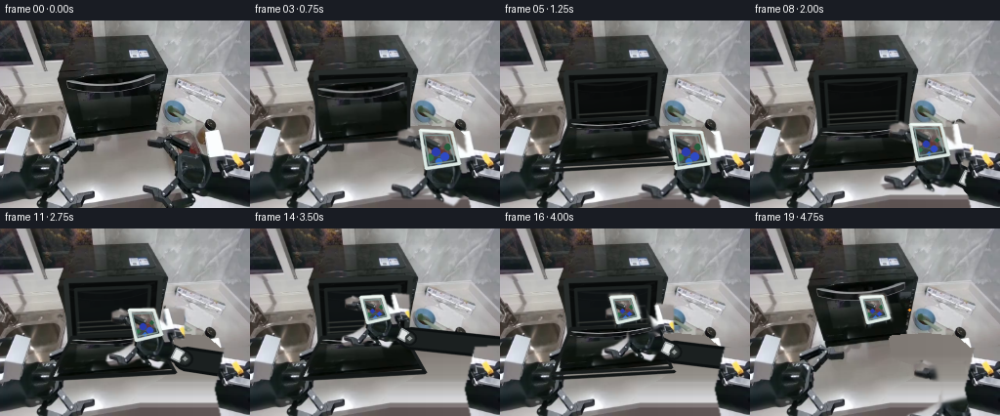
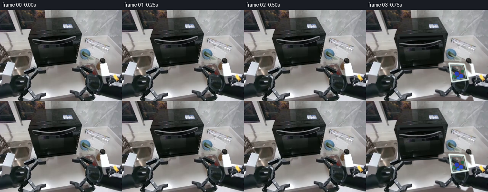
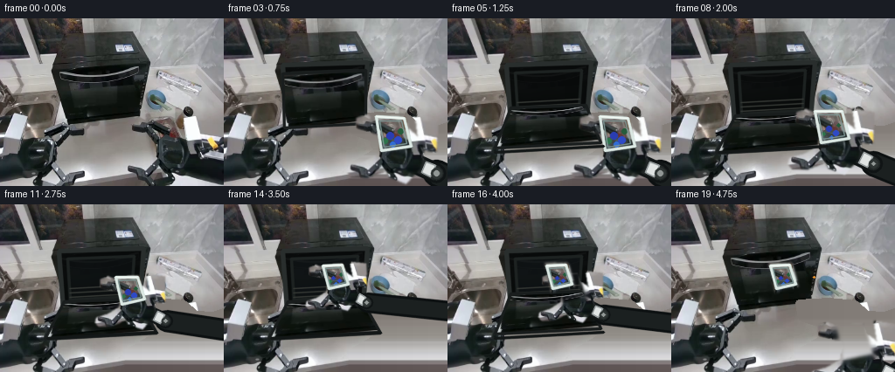

CODING AGENTS AS PIXEL WORLD MODELS
traex/GPT-5.6-Sol · common50_0006
点击播放 · 原生 RGB 像素
逐轮保存的候选
回放视频、检查图与代码变化。
每份候选均可单独播放。实际图片检查记录在下方工具轨迹中。
候选 01播放与检查图
点击播放 · 原生 RGB 像素


展开代码变化
--- 上一保存版本
+++ 本次保存版本
@@ -0,0 +1,254 @@
+from pathlib import Path
+
+import cv2
+import numpy as np
+from PIL import Image
+
+import artifact_io
+
+
+ROOT = Path(__file__).resolve().parent
+
+
+def poly_mask(shape, polygons, blur=0):
+ mask = np.zeros(shape[:2], np.uint8)
+ for points in polygons:
+ cv2.fillPoly(mask, [np.asarray(points, np.int32)], 255)
+ if blur:
+ mask = cv2.GaussianBlur(mask, (0, 0), blur)
+ return mask
+
+
+def composite(dst, src, alpha):
+ a = alpha.astype(np.float32)[..., None] / 255.0
+ return np.clip(src.astype(np.float32) * a + dst.astype(np.float32) * (1.0 - a), 0, 255).astype(np.uint8)
+
+
+def ease(x):
+ x = float(np.clip(x, 0.0, 1.0))
+ return x * x * (3.0 - 2.0 * x)
+
+
+def apply_affine(image, mask, center, target, scale=1.0, angle=0.0):
+ h, w = image.shape[:2]
+ m = cv2.getRotationMatrix2D(tuple(center), angle, scale)
+ mapped = m @ np.array([center[0], center[1], 1.0])
+ m[:, 2] += np.asarray(target) - mapped
+ warped = cv2.warpAffine(image, m, (w, h), flags=cv2.INTER_LINEAR,
+ borderMode=cv2.BORDER_CONSTANT, borderValue=(0, 0, 0))
+ warped_mask = cv2.warpAffine(mask, m, (w, h), flags=cv2.INTER_LINEAR,
+ borderMode=cv2.BORDER_CONSTANT, borderValue=0)
+ return warped, warped_mask, m
+
+
+def xform_pt(m, p):
+ q = m @ np.array([p[0], p[1], 1.0])
+ return int(round(q[0])), int(round(q[1]))
+
+
+def draw_arm_link(frame, hand_center, scale):
+ """Articulated, rigid link behind the copied end effector."""
+ hx, hy = hand_center
+ # The fixed robot base is just outside the lower-right edge.
+ root = (270, 173)
+ elbow = (int(236 - (200 - hx) * .22), int(157 - (153 - hy) * .10))
+ wrist = (int(hx + 18 * scale), int(hy + 19 * scale))
+ cv2.line(frame, root, elbow, (12, 16, 17), 34, cv2.LINE_AA)
+ cv2.line(frame, root, elbow, (25, 30, 30), 27, cv2.LINE_AA)
+ cv2.line(frame, elbow, wrist, (16, 20, 21), max(16, int(24 * scale)), cv2.LINE_AA)
+ cv2.line(frame, elbow, wrist, (31, 37, 37), max(11, int(18 * scale)), cv2.LINE_AA)
+ # White rectangular actuator housing and two metallic pivots.
+ vx, vy = wrist[0] - elbow[0], wrist[1] - elbow[1]
+ norm = max(1.0, (vx * vx + vy * vy) ** .5)
+ nx, ny = -vy / norm, vx / norm
+ a = np.array(elbow, float) + np.array([vx, vy]) * .18
+ b = np.array(elbow, float) + np.array([vx, vy]) * .53
+ half = 7.0 * scale
+ housing = np.array([a + [nx * half, ny * half], b + [nx * half, ny * half],
+ b - [nx * half, ny * half], a - [nx * half, ny * half]], np.int32)
+ cv2.fillConvexPoly(frame, housing, (224, 228, 227), cv2.LINE_AA)
+ cv2.polylines(frame, [housing], True, (139, 146, 147), 1, cv2.LINE_AA)
+ cv2.circle(frame, elbow, max(5, int(7 * scale)), (47, 53, 52), -1, cv2.LINE_AA)
+ cv2.circle(frame, elbow, max(2, int(3 * scale)), (145, 151, 149), -1, cv2.LINE_AA)
+
+
+def draw_container_details(frame, m, released=False):
+ """Strengthen the real container's transparent rim and vegetable contents."""
+ corners = [(173, 113), (205, 113), (214, 145), (181, 151)]
+ pts = np.asarray([xform_pt(m, p) for p in corners], np.int32)
+ overlay = frame.copy()
+ cv2.fillConvexPoly(overlay, pts, (168, 189, 187), cv2.LINE_AA)
+ frame[:] = cv2.addWeighted(overlay, .13, frame, .87, 0)
+ # Chopped red pepper, carrot and greens remain rigidly in the tray.
+ for p, color, radius in [((190, 134), (42, 61, 177), 4),
+ ((199, 139), (46, 74, 198), 4),
+ ((184, 140), (45, 115, 75), 3),
+ ((202, 129), (38, 92, 60), 3),
+ ((193, 144), (48, 108, 212), 3)]:
+ q = xform_pt(m, p)
+ # Radius follows the affine scale.
+ s = (m[0, 0] ** 2 + m[0, 1] ** 2) ** .5
+ cv2.circle(frame, q, max(1, int(radius * s)), color, -1, cv2.LINE_AA)
+ cv2.polylines(frame, [pts], True, (219, 232, 227), 2, cv2.LINE_AA)
+ inner = np.asarray([xform_pt(m, p) for p in [(177, 117), (202, 117), (209, 142), (183, 147)]], np.int32)
+ cv2.polylines(frame, [inner], True, (127, 151, 149), 1, cv2.LINE_AA)
+ # Specular edge makes the clear plastic easy to identify.
+ cv2.line(frame, tuple(pts[0]), tuple(pts[1]), (245, 250, 245), 1, cv2.LINE_AA)
+
+
+def microwave_door(frame, src, openness, interior_light=0.0):
+ if openness <= .002:
+ return frame
+ h, w = frame.shape[:2]
+ closed = np.float32([[67, 55], [164, 51], [159, 115], [73, 120]])
+ opened = np.float32([[73, 111], [157, 108], [179, 147], [51, 154]])
+ dest = closed * (1.0 - openness) + opened * openness
+
+ # Dark oven cavity with a subtle warm reflection from its lamp.
+ cavity = np.array([[67, 53], [164, 50], [159, 116], [72, 121]], np.int32)
+ ov = frame.copy()
+ cv2.fillConvexPoly(ov, cavity, (8, 10, 10), cv2.LINE_AA)
+ frame = cv2.addWeighted(ov, .93, frame, .07, 0)
+ if interior_light > 0:
+ light = frame.copy()
+ cv2.fillConvexPoly(light, np.array([[76, 61], [154, 58], [151, 107], [78, 111]], np.int32),
+ (30, 40, 45), cv2.LINE_AA)
+ frame = cv2.addWeighted(light, .25 * interior_light, frame, 1 - .25 * interior_light, 0)
+ # Interior frame, rear wall, and horizontal rack.
+ cv2.polylines(frame, [cavity], True, (41, 46, 45), 3, cv2.LINE_AA)
+ rear = np.array([[77, 62], [153, 59], [150, 105], [80, 109]], np.int32)
+ cv2.polylines(frame, [rear], True, (29, 34, 33), 2, cv2.LINE_AA)
+ for yy in (92, 97, 102):
+ cv2.line(frame, (79, yy + 4), (151, yy), (54, 57, 53), 1, cv2.LINE_AA)
+
+ # Re-use and perspective-warp the actual appliance door; hence materials,
+ # reflections, handle, and controls stay temporally consistent.
+ hm = cv2.getPerspectiveTransform(closed, dest)
+ warped = cv2.warpPerspective(src, hm, (w, h), flags=cv2.INTER_LINEAR,
+ borderMode=cv2.BORDER_CONSTANT)
+ sm = np.zeros((h, w), np.uint8)
+ cv2.fillConvexPoly(sm, closed.astype(np.int32), 255)
+ wm = cv2.warpPerspective(sm, hm, (w, h), flags=cv2.INTER_LINEAR)
+ frame = composite(frame, warped, wm)
+ cv2.polylines(frame, [dest.astype(np.int32)], True, (25, 29, 29), 2, cv2.LINE_AA)
+ return frame
+
+
+def main():
+ src = np.asarray(Image.open(ROOT / "first_frame.png").convert("RGB"))
+ # OpenCV drawing uses BGR tuples, but channels here intentionally stay RGB;
+ # all chosen shades are near-neutral and vegetable colors are specified RGB.
+ h, w = src.shape[:2]
+
+ # Remove the initial right arm/container once it starts moving, exposing the
+ # uninterrupted stainless worktop beneath. Telea is deterministic local
+ # pixel interpolation, and uses no external model or asset.
+ remove = poly_mask(src.shape, [
+ [(145, 112), (180, 110), (211, 113), (224, 125), (243, 126),
+ (256, 122), (256, 192), (145, 192), (142, 170), (175, 151),
+ (169, 137), (148, 130)],
+ ], 1)
+ base = cv2.inpaint(src, remove, 5, cv2.INPAINT_TELEA)
+
+ # Pixel mask for the real, rigid right end-effector and held tray.
+ hand_mask = poly_mask(src.shape, [
+ [(173, 112), (206, 111), (216, 146), (183, 155)], # tray
+ [(151, 115), (162, 111), (184, 120), (205, 124), (210, 134),
+ (184, 135), (164, 130), (151, 126)], # upper jaw
+ [(144, 170), (161, 165), (181, 153), (195, 158), (187, 174),
+ (165, 183), (147, 183), (142, 177)], # lower jaw
+ [(181, 131), (212, 126), (230, 142), (226, 170), (210, 188),
+ (190, 181), (177, 158)], # wrist/palm
+ [(218, 109), (244, 113), (243, 151), (224, 148)], # white actuator
+ ], 1.0)
+
+ # A hand-only source is used after release, so the vegetables stay behind.
+ tray_mask = poly_mask(src.shape, [[(171, 109), (208, 110), (217, 149), (180, 157)]], 2)
+ clean_hand = cv2.inpaint(src, tray_mask, 4, cv2.INPAINT_TELEA)
+ clean_hand_mask = cv2.subtract(hand_mask, cv2.erode(tray_mask, np.ones((3, 3), np.uint8)))
+
+ frames = []
+ for i in range(20):
+ if i == 0:
+ frames.append(src.copy())
+ continue
+
+ # Hold perfectly still for the first half-second, then perform the task.
+ if i < 3:
+ frames.append(src.copy())
+ continue
+
+ # Door motion: open, remain stable for insertion, then close for cooking.
+ if i <= 6:
+ door = ease((i - 2) / 4)
+ elif i <= 15:
+ door = 1.0
+ else:
+ door = 1.0 - ease((i - 15) / 4)
+
+ # Container center follows a single smooth reach into the cavity.
+ if i <= 6:
+ reach = 0.0
+ elif i <= 14:
+ reach = ease((i - 6) / 8)
+ else:
+ reach = 1.0
+ start = np.array([191.0, 134.0])
+ placed = np.array([126.0, 84.0])
+ target = start * (1 - reach) + placed * reach
+ scale = 1.0 - .30 * reach
+ angle = -2.0 + 5.0 * reach
+
+ # At release, the hand withdraws while the tray remains on the rack.
+ released = i >= 15
+ if released:
+ retreat = ease((i - 15) / 4)
+ hand_target = placed * (1 - retreat) + np.array([206.0, 157.0]) * retreat
+ hand_scale = .70 + .25 * retreat
+ hand_angle = 3.0 - 3.0 * retreat
+ else:
+ hand_target, hand_scale, hand_angle = target, scale, angle
+
+ frame = base.copy()
+ frame = microwave_door(frame, src, door, interior_light=reach)
+
+ # Draw rigid arm links first, then the photographed gripper over them.
+ # Anchor translation turns tray center into the requested path point.
+ _, _, probe_m = apply_affine(src, hand_mask, (191, 134), hand_target,
+ hand_scale, hand_angle)
+ palm = xform_pt(probe_m, (207, 157))
+ draw_arm_link(frame, palm, hand_scale)
+ moving_src = clean_hand if released else src
+ moving_mask = clean_hand_mask if released else hand_mask
+ warped, wa, m = apply_affine(moving_src, moving_mask, (191, 134), hand_target,
+ hand_scale, hand_angle)
+ frame = composite(frame, warped, wa)
+
+ if not released:
+ draw_container_details(frame, m)
+ else:
+ # Stationary released tray, independently copied at final pose.
+ tray_only = cv2.bitwise_and(src, src, mask=tray_mask)
+ tw, tm, tray_m = apply_affine(tray_only, tray_mask, (191, 134), placed, .70, 3.0)
+ frame = composite(frame, tw, tm)
+ draw_container_details(frame, tray_m, True)
+
+ # The open door is physically in front of the lower arm. Re-warping only
+ # its narrow lower lip supplies the correct final occlusion cue.
+ if door > .65:
+ cv2.line(frame, (54, 153), (178, 146), (19, 23, 23), 2, cv2.LINE_AA)
+
+ # Once shut, a restrained amber indicator communicates that cooking began.
+ if i == 19:
+ cv2.circle(frame, (159, 83), 2, (244, 153, 48), -1, cv2.LINE_AA)
+ cv2.circle(frame, (159, 83), 4, (190, 106, 34), 1, cv2.LINE_AA)
+ frames.append(frame.astype(np.uint8))
+
+ frames = np.stack(frames).astype(np.uint8)
+ # Contract-critical exact first frame.
+ frames[0] = src
+ artifact_io.save(frames, ROOT)
+
+
+if __name__ == "__main__":
+ main()
候选 02播放与检查图
点击播放 · 原生 RGB 像素

展开代码变化
--- 上一保存版本
+++ 本次保存版本
@@ -49,27 +49,46 @@
def draw_arm_link(frame, hand_center, scale):
"""Articulated, rigid link behind the copied end effector."""
hx, hy = hand_center
- # The fixed robot base is just outside the lower-right edge.
- root = (270, 173)
- elbow = (int(236 - (200 - hx) * .22), int(157 - (153 - hy) * .10))
- wrist = (int(hx + 18 * scale), int(hy + 19 * scale))
- cv2.line(frame, root, elbow, (12, 16, 17), 34, cv2.LINE_AA)
- cv2.line(frame, root, elbow, (25, 30, 30), 27, cv2.LINE_AA)
- cv2.line(frame, elbow, wrist, (16, 20, 21), max(16, int(24 * scale)), cv2.LINE_AA)
- cv2.line(frame, elbow, wrist, (31, 37, 37), max(11, int(18 * scale)), cv2.LINE_AA)
+ # Only the forearm enters from the right border; this preserves the real
+ # robot silhouette and avoids inventing a conspicuous tabletop mechanism.
+ root = (268, min(188, int(hy + 35 * scale)))
+ elbow = (int(hx + 37 * scale), int(hy + 19 * scale))
+ wrist = (int(hx + 13 * scale), int(hy + 8 * scale))
+ cv2.line(frame, root, elbow, (12, 16, 17), max(19, int(30 * scale)), cv2.LINE_AA)
+ cv2.line(frame, root, elbow, (27, 32, 32), max(14, int(23 * scale)), cv2.LINE_AA)
+ cv2.line(frame, elbow, wrist, (16, 20, 21), max(12, int(21 * scale)), cv2.LINE_AA)
+ cv2.line(frame, elbow, wrist, (34, 39, 39), max(8, int(15 * scale)), cv2.LINE_AA)
# White rectangular actuator housing and two metallic pivots.
vx, vy = wrist[0] - elbow[0], wrist[1] - elbow[1]
norm = max(1.0, (vx * vx + vy * vy) ** .5)
nx, ny = -vy / norm, vx / norm
- a = np.array(elbow, float) + np.array([vx, vy]) * .18
- b = np.array(elbow, float) + np.array([vx, vy]) * .53
+ a = np.array(elbow, float) + np.array([vx, vy]) * .16
+ b = np.array(elbow, float) + np.array([vx, vy]) * .58
half = 7.0 * scale
housing = np.array([a + [nx * half, ny * half], b + [nx * half, ny * half],
b - [nx * half, ny * half], a - [nx * half, ny * half]], np.int32)
cv2.fillConvexPoly(frame, housing, (224, 228, 227), cv2.LINE_AA)
cv2.polylines(frame, [housing], True, (139, 146, 147), 1, cv2.LINE_AA)
- cv2.circle(frame, elbow, max(5, int(7 * scale)), (47, 53, 52), -1, cv2.LINE_AA)
+ cv2.circle(frame, elbow, max(4, int(6 * scale)), (47, 53, 52), -1, cv2.LINE_AA)
cv2.circle(frame, elbow, max(2, int(3 * scale)), (145, 151, 149), -1, cv2.LINE_AA)
+
+
+def stainless_fill(image, mask):
+ """Replace the moving foreground with perspective-consistent worktop."""
+ h, w = mask.shape
+ yy, xx = np.mgrid[:h, :w]
+ # Sample uncontaminated horizontal strips from the same stainless counter.
+ sample_x = np.clip(xx, 88, 143)
+ sample_y = np.where(yy < 157, np.clip(yy, 129, 156), np.clip(yy, 160, 188))
+ out = image.copy()
+ sampled = image[sample_y, sample_x].astype(np.float32)
+ # Match the gentle rightward illumination seen on the actual tabletop.
+ sampled += ((xx - sample_x) * .055)[..., None]
+ sampled = np.clip(sampled, 0, 255).astype(np.uint8)
+ out[mask > 0] = sampled[mask > 0]
+ # Preserve brushed-metal softness at the boundary.
+ out = cv2.GaussianBlur(out, (0, 0), .42)
+ return out
def draw_container_details(frame, m, released=False):
@@ -148,7 +167,7 @@
(256, 122), (256, 192), (145, 192), (142, 170), (175, 151),
(169, 137), (148, 130)],
], 1)
- base = cv2.inpaint(src, remove, 5, cv2.INPAINT_TELEA)
+ base = stainless_fill(src, remove)
# Pixel mask for the real, rigid right end-effector and held tray.
hand_mask = poly_mask(src.shape, [
@@ -240,8 +259,8 @@
# Once shut, a restrained amber indicator communicates that cooking began.
if i == 19:
- cv2.circle(frame, (159, 83), 2, (244, 153, 48), -1, cv2.LINE_AA)
- cv2.circle(frame, (159, 83), 4, (190, 106, 34), 1, cv2.LINE_AA)
+ # Existing control panel is at the right edge of the appliance.
+ cv2.circle(frame, (163, 83), 1, (244, 153, 48), -1, cv2.LINE_AA)
frames.append(frame.astype(np.uint8))
frames = np.stack(frames).astype(np.uint8)
候选 03播放与检查图

候选 04播放与检查图
点击播放 · 原生 RGB 像素


展开代码变化
--- 上一保存版本
+++ 本次保存版本
@@ -232,7 +232,7 @@
frame = microwave_door(frame, src, door, interior_light=reach)
# Draw rigid arm links first, then the photographed gripper over them.
- # Anchor translation turns tray center into the requested path point.
+ # The moved arm remains attached to the same right-side robot body.
_, _, probe_m = apply_affine(src, hand_mask, (191, 134), hand_target,
hand_scale, hand_angle)
palm = xform_pt(probe_m, (207, 157))
@@ -243,6 +243,13 @@
hand_scale, hand_angle)
frame = composite(frame, warped, wa)
+ # Repaint the fixed wrist housing/body above the synthetic connecting
+ # link. This keeps the mechanism layered and attached instead of letting
+ # the forearm visually cross over its own base.
+ fixed_body_mask = poly_mask(src.shape, [[(230, 121), (256, 120), (256, 192),
+ (226, 192), (220, 164)]], .7)
+ frame = composite(frame, src, fixed_body_mask)
+
if not released:
draw_container_details(frame, m)
else:
可观测工具轨迹
实际执行的命令与返回图片。
命令 1exit 0
/bin/bash -lc "cat prompt.txt && printf '\\n---GENERATION_RULES---\\n' && cat GENERATION_RULES.md"
命令 2exit 0
/bin/bash -lc "find . -maxdepth 2 -type f -printf '%p %s bytes\\n' | sort && printf '\\nTools:\\n' && command -v ffmpeg || true && command -v python3 || true"
命令 3exit 0
/bin/bash -lc "cat task_spec.json; sed -n '1,240p' artifact_io.py"
命令 4exit 0
/bin/bash -lc "python3 - <<'PY'
from PIL import Image
im=Image.open('first_frame.png'); print(im.size, im.mode)
PY"命令 5exit 0
/bin/bash -lc "python3 - <<'PY'
from PIL import Image
im=Image.open('first_frame.png')
im.resize((1024,768)).save('.tmp/up.png')
PY"命令 6exit 0
/bin/bash -lc "python3 - <<'PY'
try: import cv2; print('cv2',cv2.__version__)
except Exception as e: print(e)
try: import scipy; print('scipy',scipy.__version__)
except Exception as e: print(e)
PY"命令 7exit 0
/bin/bash -lc "python3 generate.py && python3 - <<'PY'
import numpy as np
from PIL import Image
z=np.load('pixels.npz')['pixels']; a=np.array(Image.open('first_frame.png')); p=((a[...,0].astype('u4')<<16)|(a[...,1].astype('u4')<<8)|a[...,2]).astype('u4')
print('tensor',z.shape,z.dtype,'first identical',np.array_equal(z[:,:,0],p))
PY"命令 8exit 0
/bin/bash -lc "python3 - <<'PY'
from PIL import Image
import numpy as np
a=np.array(Image.open('first_frame.png'))
for y,x in [(140,130),(150,130),(160,130),(180,130),(150,240),(180,240),(130,235),(175,170),(125,145),(185,100)]: print((x,y),a[y,x])
PY"命令 9exit 0
/bin/bash -lc 'python3 generate.py'
命令 10exit 0
/bin/bash -lc "python3 generate.py && python3 - <<'PY'
from pathlib import Path
from PIL import Image
import numpy as np
ims=[np.array(Image.open(f'frames/{i:02}.png')) for i in range(20)]
a=np.array(Image.open('first_frame.png'))
print('count',len(ims),'shape',np.stack(ims).shape,'dtype',ims[0].dtype,'frame0_exact',np.array_equal(ims[0],a))
print('adjacent MAD',[round(float(np.abs(ims[i].astype(int)-ims[i-1]).mean()),2) for i in range(1,20)])
print('files',[(p.name,p.stat().st_size) for p in [Path('pixels.npz'),Path('index.html'),Path('inspection.png')]])
PY"视觉工具实际返回图片 1

视觉工具实际返回图片 2

视觉工具实际返回图片 3

视觉工具实际返回图片 4

保存候选 4 份；完成命令 10 次；可验证图片返回 4 张。原始 API 响应与完整日志保留在本地。